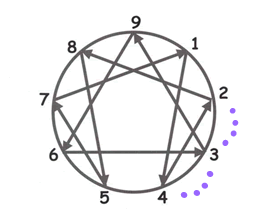

九型人格分析报告
原著：[美]海伦・帕玛 / 编译：APESK
报告接收人:
才储成员1589223
完成问卷时间:
2017/11/1
你是第几型？
你极有可能属于第四型悲情浪漫主义者。
你的九型原始分柱状图及折线图：
如上数据，你最有可能是第四型悲情浪漫主义者，最不可能是第二型给予者。
你的九型人格倾向依次排序为：
No.1、第四型悲情浪漫主义者
No.2、第三型实干家
No.3、第六型怀疑论者
No.4、第九型和事佬
No.5、第一型完美主义者
No.6、第五型科学家
No.7、第八型领导者
No.8、第七型享乐主义者
No.9、第二型给予者
你的素描
你的基本描述：第四型悲情浪漫主义者(侧翼：4W3)第四型人格是九型人格中的一型性格，名为浪漫者，又称为艺术型、自我型、凭感觉者。健康的第四型是自我反省的、自觉的，不断“寻找自我”，和感觉与内在冲力有密切连系。对自己和对他人都很敏感、直觉；有同情心的、机智的、谨慎的。他们会自我表现，很有个性，个人主义。享受孤独，从容地让无意识的内在冲力上升到意识层面。他们会自我表露，容易感动、但情感很坚强。
最佳状况：具有深奥的创造力，可以表达个人与众人的感受，可能以充满灵感的艺术作品来表现。在个人的层面上，他们具有革新与自我再生的能力，拥有自我创造、救赎的特质，能够自身经验转化成有价值的东西。
有很多认为第四型是内向的人格，其实不然，第四型可以从最外向到最内向都有，外向的第四型很容易结识朋友，内向的第四型则充满神秘感。
外表与气质
从衣着品味和外形上他们富有个人风格，有眼光而不落俗套，讲究配搭和款色，有艺术家的气质，有时会十分突出而令人震惊。他们的眼神冷冰冰，目光永远是凝视著远方，心里却是感性而动人。心情完全会影响他们的决定。
情绪总是处在两极状态，极度的抑郁或兴奋，非常敏感，遇事容易夸张本身的情绪。这种过于敏感的认知变化更加强了妒忌心。
健康的特点
个性独特
创造力高，幻想力丰富
有表演天分
感受性强，有同情心
为人真挚，忠于自己的感受
极佳的品味
优雅、温柔
一般的特点
幻想
感情脆弱
不健康的特点
严重沮丧，心情极差
常有用药的习惯
由于第四型人格过分自我的性格，许多时候自小已不获身边的人认同，常被人批评任性，无纪律等。
第四型人格小孩很易哭，自觉不好时会躲在一角，想透过这种抽离吸引成人注意
顾影自怜、悲观绝望，容易有自杀倾向
人格升降特征
处于安定和人格提升时：走向第一型，会变得冷静而较为理性，做事有原则及客观，而不会再受控于变化无常的情绪。
处于压力和自我防卫时：走向第二型，吹毛求疵，爱控制人，亦会沮丧。
侧翼
4w5： 倾向第五型，为人比较内向，冷淡疏远，需要空间，看事情很透彻
4w3： 倾向第三型，为人比较外向，有野心，喜欢炫耀，精力充沛，做事比较积极，非常注意自己的形象和外表，也会像第七型那样喜欢搞笑。
为人建议
不要受制于情绪。每当有情绪时�o扪心自问是否在借这些情绪去逃避某些其他事情，例如工作，或者反省是否为了闹情绪而闹情绪。
不要放弃。第四型的人很容易因为一时的情绪而放弃。给点恒心�o坚持到底�o会有所值。
不要因为与其他人的看法不同�o又或者没有自己的深度�o就彻底地否定了他人的能力。
不要把事事看得太个人化。
与之相处
不要教其如何处理自己的情绪�o尽量不要批判他们太悲观、小事化大等。这样只会使之更加收藏自己。
他们诉苦时�o通常只想其情绪被了解与接受。只要让他们发泄情绪�o不用太急着给意见。
鼓励他们把意念和构思讲出来�o欣赏其深度。若有不明白�o就坦诚地说出来�o不可装明白敷衍过去。
不要对他们投以怪异的眼光�o尊重其独特的风格。
你的三种副型
背景
作为一个浪漫主义者，你的「使命」是重获那已失的理想的爱、情况或状态（并且，就根本而言，即是「与本质精髓的原本联系」）。由于失去了它们，你感到内在匮乏。你以羡慕及渴望的推动力来弥补自尊感及舒畅感，并且透过副型行为来表达这一切，那就等同于原本联系的补偿代替品。
自我保存：胆大无畏/不顾后果
胆大无畏/不顾后果对求存有何作用？对浪漫主义者而言，当个普通、平凡、一般的人等同死亡。你一定要成为一个非凡之士。故此，为了求存，你莽顾边缘界限、仿佛不顾一切、在悬崖边缘游走；你甚至可能把基本的求生需要也置之不理了。这样做让你感到充满生气及与众不同；更为生命带来意义及强烈的感受。你有一种无畏的冲动，急于获得那些终极的、独一无二的特殊经验。你也会为平平无奇的事加入一抹激情，增添生气。你也许会制造一个小小的事端（例如：威胁排斥对方或是打破一般的规矩），让自己产生强烈的感觉。「不可能是我，我绝对不会屈从的」；暂且瓦解及遏制了「羡慕」。
社交：自惭形秽/抗自惭形秽
你很容易在社交场合中感到自惭形秽，仿佛那片自我保护的面纱被拿掉了，个人的缺点、不足、及短处将在社交场合中表露无疑。你总是感到自己比不上别人，总是格格不入似的。这份廉耻心让你希望隐藏自己的缺点及不足：不要让别人留意到你致命的缺陷，以免令自己蒙羞。然而，这份廉耻心也让你感受到或保存与别人的联系：「他们注意到我、还有我的不足，这一切对他们来说都是重要的。」这样让你变得有价值，表明在别人眼中，你是重要的：「我不是什么也不是」。廉耻心推动你做得更好――创造一个讲究的形象，产生优越感，处处流露出与别人不同的特质――简单而言，就是发展成抗自惭形秽的行径。「羡慕」透过这些方式，表流出来。
一对一：竞争心/不忿
在一对一的关系中，羡慕及渴望推动你去为一个特别的位置、伙伴、上司而竞争；那是一种令人鼓舞的能量。透过竞争，「我要给你看到，我会得到我应得的联系」你会为那些值得注意、讲究、及优雅的事物而努力，并以最优秀的事物为目标。这让你变成一个别具价值的人物：「我是值得的」。你猛烈评击真正的或想象中的对手；一股充满着不忿的特质便会出现。你参与竞争非为了获胜，而是为了不至于落败；你也许会在你被拒绝以前，先排斥对方或那个情境，以免让自己失败、并落入欠缺及不足之中。先遗弃对方，总比被对方遗弃好。如此一来，你抵抗了「羡慕」，控制了局面，并且守护了你的独特性。
如何理解
一、关于侧翼：
 侧翼是九型人格学的另一重要概念。每个人有所属的主要性格类型，但几乎没有人是拥有纯正的类型。每人均是两种性格型号的混合体，而在此混合体内之第二种性格型号称之为侧翼。侧翼的位置是在九型人格图象之圆周上，它是处于你所属主要性格型号的其中一边。九型人格图可帮助我们看到各种性格型号，如何混合和性格的侧翼。
如右边的九型人格图：我们在可以看到
三号只可侧向二号和四号的性格，而不能侧向五号和七号的性格。
一号的侧翼
偏第九型的第一型：这样的第一型蛮可爱的，他们会比较随和，没有那麽严肃，不会随便地迁怒他人，他们会很放��，悠�f地享受生命带给他的乐趣。
偏第二型的第一型：偏第二型的第�C型会很热心地帮助别人，但也会强迫别人接受他以为好的模式或标准，这时就会变得自我中心，失去理性。
二号的侧翼
偏第一型的第二型：此种第二型人会比较理性，有彻底的、细致的计画，比较有条理，有较清晰的目标，具有第一型理想主义及客观中立的特质，不过他们也带有第一型那种刻板、挑剔、原则性强、不乐观的特性。
偏第三型的第二型：这样的第二型会变得较为活泼和爱表现，愿意接受别人的帮助，但同时也会带有第三型的自我中心及善于经营的个性。
三号的侧翼
偏第二型的第三型：这样的第三型人物好可爱，他们会不那麽爱出风头，愿意帮助别人，感受他人的感受。
偏第四型 的第三型：这类的第三型具备第四型那种灵感及创造力，也具有内向、沉静、敏感、情绪化的特质。
四号的侧翼
偏第三型的第四型：第三型的活力、外向、目标感强使得第四型变得走出个人的情绪，注意自己的形象及社会共同的规则，也变得更有雄心壮志。
偏第五型的第四型：第五型的内向，富有创意，使得第四型变得需要私人空间，创新但会不切实际活力。
五号的侧翼
偏第四型的第五型：接近第四型的第五型会变得有想像力、比较感性、忧郁并富有艺术气质。荣格即属于此类性格。
偏第六型的第五型：这样的人会很理智、分析能力很强、重视团队、务实，但也有爱怀疑、过分担心的第六型特质。
六号的侧翼
偏第五型的第六型：因为倾向于第五型的客观、冷静、严肃，他们比较不会那麽盲目崇拜权威，但容易变得内向、猜疑、自大且富攻击性。
偏第七型的第六型：这样的第六型比较爱焦急，能感觉到谁是他事业上的贵人。
七号的侧翼
偏第六型的第七型：比较注重团体的利益及协作精神，能够更多地顾及他人感受，更加尽责，但也会有更多的担忧、焦虑。
偏第八型的第七型：此类人更看重权力，更喜欢操控别人，具有第八型粗暴、缺乏耐心的性格。
八号的侧翼
偏第七型的第八型：这种人将成为九种型格特徵中的最有意志力及最有冲劲的人。他们精力旺盛、善于抓住人心、有强烈的成功欲望、爱冒险、更有主见。
偏第九型的第八型：这类人变得很受欢迎，他们很有同情心，喜欢支持体谅别人，大度、宽厚、有耐性。
九号的侧翼
偏第八型的第九型：这样的第九型会变得没有那麽畏缩、逃避，他们可以更外向、直接，独立及有决断力。
偏第一型的第九型：这样的第九型会变有理想，有秩序，但易受琐碎事情干扰。
二、关于副型：
在人类演化的过程中，存在着三种基本的求生存行为，九型人格学理论称之为副型。副型主要包括三种基本的形式，分别是自我保护行为、社交行为和一对一行为。
自我保存行为：注意力的焦点主要放在所牵涉个人存活的事情上，比如安全、稳定、舒适、保护及充足的资源等。所有的这些都是为了保证我们能够很好地存活在这个世界上，满足自己日常生活或是更好地生活的需要。他们会努力努力工作积累足够的物质财富才会感觉到一种安全感，才会放心地进入一段婚姻；他们会在家里存储一个周的饭菜以备出现坏天气；周末在家休息的时候，他们会为自己找一大堆的事情做，这样心里才会感觉踏实。
社交行为：注意力的焦点涉及的范围会很广，会跟随所有牵涉到生活圈和团体的事物，比如，在团体中的角色与地位、社会接受程度、归属感、参与感及友谊等。你会发现副型为社交的人他们会有忙不完的应酬，经常会出现在各种社交场合中；他们经常声称自己的朋友很多，但你会发现他们口中的朋友很多都仅仅是泛泛之交或仅有一面之缘而已。他们喜欢人多的场合，只有在与人交往的过程中才会感受到自身的价值，沉闷、单调的场合会让他们产生窒息感。
一对一行为：注意力更多的是放在有关亲密关系的事务上，比如跟特定的人维持亲密关系、个人魅力、亲密感、结盟及融合等。副型为一对一的人会把关系看的很重要，在他们的一生中很多重大的挫败都来源于关系。到了一种场合中，他们会首先为自己找一个一对一对象并在彼此间建立一种亲密的关系。他们将亲密的关系看的比物质重要的多，对于自我保护型的人而言没有一定的物质保障可能不会很快走入婚姻生活；但一对一的人则会将房子、车子等看的比感情淡的多。
副型只是一种求生存的方式而言，并没有那种副型更好或那种副型不好之说。这三种副型在每个人的身上都同时存在，只是各自所占的比重不同而已。
后记
(1)本报告书内容是依当事人的问卷回答产生的结果。其内容的真实性无法保证。
(2)本内容运用的领域是针对个人性格参考上，不能视此报告作为唯一的评价依据，且本报告不承担任何形式的法律责任。